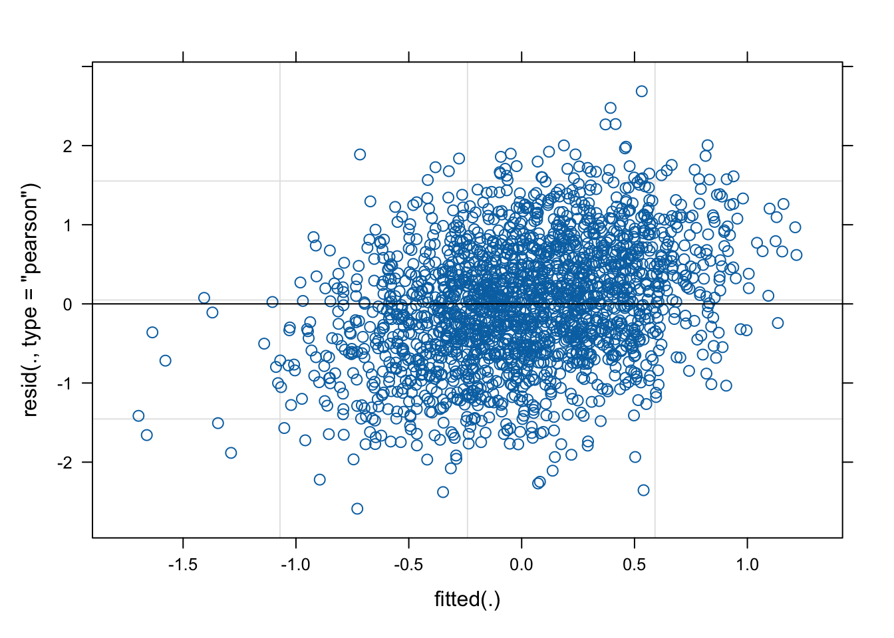

Linear mixed models (LMMs) are a powerful statistical tool that allows the analysis of complex data structures that contain both fixed and random effects. LMMs are widely used in various fields, including social sciences, biology, and engineering, due to their ability to handle hierarchical data structures and account for within-subject correlations. LMMs are an extension of the general linear model (GLM), where both fixed and random effects can be included in the model, making them more flexible and robust. These models are particularly useful when analyzing longitudinal data, where measurements are taken repeatedly over time, and correlations between observations must be accounted for. Specifically, the LMM framework accounts for these dependencies among data by extending the general regression “fixed effects” model to allow both, fixed and random effects. This approach simultaneously models an overall sample mean trajectory (fixed effect) and subject-specific (random) effects that vary randomly about the sample mean trajectory. It is this “mixture” of fixed and random effects from which these models derive their name.
Linear Mixed Models
When to use Longitudinal Linear Mixed Models (LMMs)?
You should consider using LMMs in the following situations:
You want to know: The effects of interventions, time, or other predictors on a continuous outcome over multiple time points.
Your data: Contains repeated measures taken on subjects at different time points or under various conditions.
You have: Both fixed effects (overall population effects) and random effects (individual variations) that need to be accounted for in the analysis.
Getting Started with Longitudinal Linear Mixed Models
In this tutorial, we will introduce the concept of longitudinal linear mixed models (LLMMs) and guide you through a simple example using a small dataset. By the end of this tutorial, you will be able to:
Understand the basic concepts of longitudinal linear mixed models.
Fit a longitudinal linear mixed model using example data in R.
Interpret the results of the LLMM analysis.
Basic Example
In this tutorial, we will begin by generating a sample dataset directly within R to ensure everyone has the same starting point and can follow along without needing to download or access external files. This generated dataset will serve as our example throughout this tutorial. In your own analyses, you’ll likely start by importing your own data.
The simulated dataset created for this example consists of scores on a single outcome variable (“Job_Satisfaction”) for 500 individuals each measured at four time points: T1-T4.
Create Example Dataset
Code
# This will create a dataset with 2000 rows (4 rows for each of the 500 individuals).# Setting the number of individuals for our sample datan <-500# Specifying the desired correlation matrix for our datacor_matrix <-matrix(c(1, 0.30, 0.30, 0.30, 0.30, 1, 0.30, 0.30, 0.30, 0.30, 1, 0.30,0.30, 0.30, 0.30, 1),nrow=4)# Using Cholesky decomposition to generate correlated datacholesky <-chol(cor_matrix)# Generating correlated random data for 4 timepointsrandom_data <-matrix(rnorm(n *4), ncol=4)correlated_data <- random_data %*% cholesky# Converting the generated data into a structured data framedata <-data.frame(Individual =rep(1:n, each=4),TimePoint =rep(c("T1", "T2", "T3", "T4"), times=n),Job_Satisfaction =as.vector(t(correlated_data)))
View Dataset
Code
head(data)
Model Specification and Estimation
To specify a Linear Mixed Model (LMM), we will use the lme4 package in R, specifically the lmer function. In LMMs, we account for both fixed effects, which are consistent across individuals, and random effects, which can vary. By doing so, LMMs allow us to model the trajectory of an outcome variable over time while considering the inter-individual differences and intra-individual changes.
Install & Load Libraries
Model
Code
model <-lmer(Job_Satisfaction ~ TimePoint + (1| Individual), data = data)
Model Summary
Code
summary(model)
Linear mixed model fit by REML ['lmerMod']
Formula: Job_Satisfaction ~ TimePoint + (1 | Individual)
Data: data
REML criterion at convergence: 5546.8
Scaled residuals:
Min 1Q Median 3Q Max
-3.02274 -0.62463 0.01624 0.62475 3.13772
Random effects:
Groups Name Variance Std.Dev.
Individual (Intercept) 0.2932 0.5415
Residual 0.7333 0.8563
Number of obs: 2000, groups: Individual, 500
Fixed effects:
Estimate Std. Error t value
(Intercept) 0.02348 0.04531 0.518
TimePointT2 -0.06144 0.05416 -1.134
TimePointT3 0.05766 0.05416 1.065
TimePointT4 -0.02482 0.05416 -0.458
Correlation of Fixed Effects:
(Intr) TmPnT2 TmPnT3
TimePointT2 -0.598
TimePointT3 -0.598 0.500
TimePointT4 -0.598 0.500 0.500
Code
plot(model)

-0.025
In our analysis, we employed a linear mixed model to explore the trend of Job_Satisfaction scores across four distinct time points: T1, T2, T3, and T4. Accounting for the repeated measurements on individual participants, the model assessed the fixed effect of the TimePoint variable and incorporated random intercepts for each individual. The coefficient for TimePoint indicates how the Job_Satisfaction scores shift, on average, across the time points. Specifically, the coefficient for transitioning from T1 to T2 is -0.061, from T1 to T3 is 0.058, and from T1 to T4 is -0.025. These coefficients represent the average change in Job_Satisfaction scores for each subsequent time point relative to T1. In essence, this model allows us to understand both the general trend in Job_Satisfaction over time and the individual variations around this trend.
Conclusion
The LMM allows us to analyze the trend in Job Satisfaction scores across time points while considering individual variability. Depending on the p-value for the TimePoint effect, we can determine if there’s a statistically significant change in Job Satisfaction scores over the time points. Moreover, the diagnostic plots can guide potential model refinements or highlight areas for further investigation.
Source Code
---title: "Linear Mixed Models"author: "Biostatistics Working Group"execute: warning: false---## OverviewLinear mixed models (LMMs) are a powerful statistical tool that allows the analysis of complex data structures that contain both fixed and random effects. LMMs are widely used in various fields, including social sciences, biology, and engineering, due to their ability to handle hierarchical data structures and account for within-subject correlations. LMMs are an extension of the general linear model (GLM), where both fixed and random effects can be included in the model, making them more flexible and robust. These models are particularly useful when analyzing longitudinal data, where measurements are taken repeatedly over time, and correlations between observations must be accounted for. Specifically, the LMM framework accounts for these dependencies among data by extending the general regression "fixed effects" model to allow both, fixed and random effects. This approach simultaneously models an overall sample mean trajectory (fixed effect) and subject-specific (random) effects that vary randomly about the sample mean trajectory. It is this "mixture" of fixed and random effects from which these models derive their name.### When to use Longitudinal Linear Mixed Models (LMMs)?You should consider using LMMs in the following situations:1. You want to know: The effects of interventions, time, or other predictors on a continuous outcome over multiple time points.2. Your data: Contains repeated measures taken on subjects at different time points or under various conditions.3. You have: Both fixed effects (overall population effects) and random effects (individual variations) that need to be accounted for in the analysis.### Getting Started with Longitudinal Linear Mixed ModelsIn this tutorial, we will introduce the concept of longitudinal linear mixed models (LLMMs) and guide you through a simple example using a small dataset. By the end of this tutorial, you will be able to:1. Understand the basic concepts of longitudinal linear mixed models.2. Fit a longitudinal linear mixed model using example data in R.3. Interpret the results of the LLMM analysis.## Basic ExampleIn this tutorial, we will begin by generating a sample dataset directly within R to ensure everyone has the same starting point and can follow along without needing to download or access external files. This generated dataset will serve as our example throughout this tutorial. In your own analyses, you'll likely start by importing your own data.The simulated dataset created for this example consists of scores on a single outcome variable ("Job_Satisfaction") for 500 individuals each measured at four time points: T1-T4. #### Create Example Dataset```{r}# This will create a dataset with 2000 rows (4 rows for each of the 500 individuals).# Setting the number of individuals for our sample datan <-500# Specifying the desired correlation matrix for our datacor_matrix <-matrix(c(1, 0.30, 0.30, 0.30, 0.30, 1, 0.30, 0.30, 0.30, 0.30, 1, 0.30,0.30, 0.30, 0.30, 1),nrow=4)# Using Cholesky decomposition to generate correlated datacholesky <-chol(cor_matrix)# Generating correlated random data for 4 timepointsrandom_data <-matrix(rnorm(n *4), ncol=4)correlated_data <- random_data %*% cholesky# Converting the generated data into a structured data framedata <-data.frame(Individual =rep(1:n, each=4),TimePoint =rep(c("T1", "T2", "T3", "T4"), times=n),Job_Satisfaction =as.vector(t(correlated_data)))```#### View Dataset```{r}head(data)```### Model Specification and EstimationTo specify a Linear Mixed Model (LMM), we will use the `lme4` package in R, specifically the `lmer` function. In LMMs, we account for both fixed effects, which are consistent across individuals, and random effects, which can vary. By doing so, LMMs allow us to model the trajectory of an outcome variable over time while considering the inter-individual differences and intra-individual changes.#### Install & Load Libraries```{r setup, include=FALSE}if (!("lme4"%in%installed.packages())) install.packages("lme4")library(lme4)```#### Model```{r}model <-lmer(Job_Satisfaction ~ TimePoint + (1| Individual), data = data)```#### Model Summary```{r}summary(model)plot(model)````r round(fixef(model)[4], 3)`In our analysis, we employed a linear mixed model to explore the trend of `Job_Satisfaction` scores across four distinct time points: T1, T2, T3, and T4. Accounting for the repeated measurements on individual participants, the model assessed the fixed effect of the `TimePoint` variable and incorporated random intercepts for each individual. The coefficient for `TimePoint` indicates how the `Job_Satisfaction` scores shift, on average, across the time points. Specifically, the coefficient for transitioning from T1 to T2 is `r round(fixef(model)[2], 3)`, from T1 to T3 is `r round(fixef(model)[3], 3)`, and from T1 to T4 is `r round(fixef(model)[4], 3)`. These coefficients represent the average change in `Job_Satisfaction` scores for each subsequent time point relative to T1. In essence, this model allows us to understand both the general trend in `Job_Satisfaction` over time and the individual variations around this trend.## ConclusionThe LMM allows us to analyze the trend in `Job Satisfaction` scores across time points while considering individual variability. Depending on the p-value for the TimePoint effect, we can determine if there's a statistically significant change in Job Satisfaction scores over the time points. Moreover, the diagnostic plots can guide potential model refinements or highlight areas for further investigation.